您好，欢迎来到中国高速公路网—21世纪公路网！
 作者：文/《中国公路》杂志社 谢博识 张林（实习） 曹晶磊 彭翔
来源：中国高速公路网—21世纪公路网
作者：文/《中国公路》杂志社 谢博识 张林（实习） 曹晶磊 彭翔
来源：中国高速公路网—21世纪公路网
 时间：2020-11-10
时间：2020-11-10
WTC成都论坛上，十余位院士出席开幕式，并就交通强国、高质量发展、新基建、现代化综合交通运输体系、智能交通等内容，在部分平行论坛和线上论坛，作了重要专题报告。
在为期两天的线下交流中，协奏了一曲交通运输高质量发展的学术最强音，成为成都论坛上最闪耀的时刻，也为行业发展提供了宝贵智慧。本刊记者汇编部分重要观点，以飨行业。
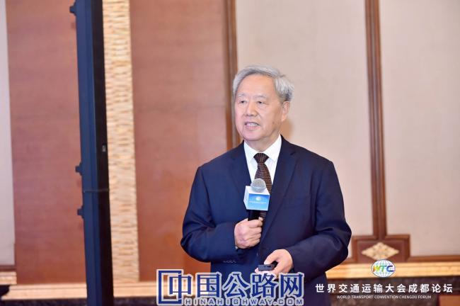
傅志寰：科技进步与管理创新要良性互动
科技进步撬动着管理创新，而管理创新反过来又会加速新科技落地和推广，进而再对科技发展提出新的要求。科技与管理两者相互作用、构成良性循环。在交通领域，这一关系依然存在。即交通科技进步，不仅对传统的交通管理方式提出新的挑战，同时还为交通管理变革提供新的理念、模式和手段。
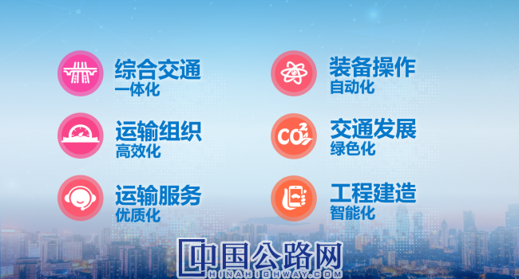
如果管理创新跟不上，即使有了信息化支撑，也达不到资源充分利用的目的，例如城市停车位由于管理体制障碍，得不到充分利用。其中，在运输组织高效化方面，除了各个行业内部重构运输组织，市场还期望铁路、公路、水运、民航实现跨界融合，开展联运。以“民航+高铁”为例，可学习德国突破行业间服务流程壁垒，增强运输资源的协同利用，实现时刻表对接，做到火车与飞机共享航班号等。显然，这种跨界融合有赖于信息技术赋能和管理体制创新
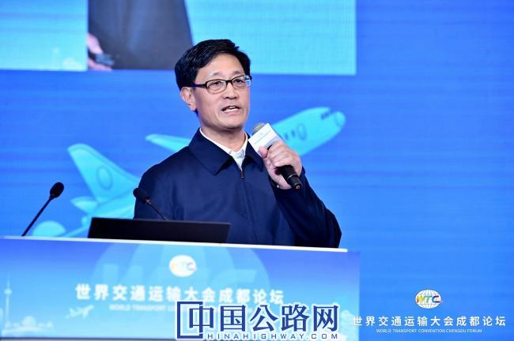
卢春房：线站技术是高铁发展的基础
目前，我国已建成了以京沪高铁、哈大高铁、兰新客专、海南东环为代表的全世界运营里程最长、运营场景最丰富的高速铁路。高铁技术涉及多个专业，其中，最关键的是四大技术，即：线路（车站）、动车组、列控、牵引供电。要实现高铁更快、智能、绿色、经济发展，四大关键技术的发展方向必须与高铁总的发展方向一致，同步推进，实现突破。四大技术中，最基础的就是线路（车站）技术。
高速铁路线路工程是由轨道、路基、桥涵、隧道及其他建筑物构成。随着智能京张、智能京雄高铁建设的全面推进，以及智能新技术在铁路各专业领域研发应用的广度和深度持续扩大，构建了中国智能高速铁路体系架构，应用了基于BIM的工程建设管理平台，开发了各专业信息化前端系统，如路基施工方面实现了基桩施工精准控制与信息化管理、路基智能化填筑等，提高了线路工程的建设质量和信息化水平。

其中，线站技术在大跨度钢桥设计参数、疲劳性能、材料及施工装备和建设组织等方面取得了系列突破，建成了跨度、荷载等创世界纪录的高速铁路桥梁。比如，刚刚建成的沪通长江大桥和五峰山长江大桥，主跨均为1092米，分别是世界最大跨度公铁两用斜拉桥和高速铁路悬索桥。
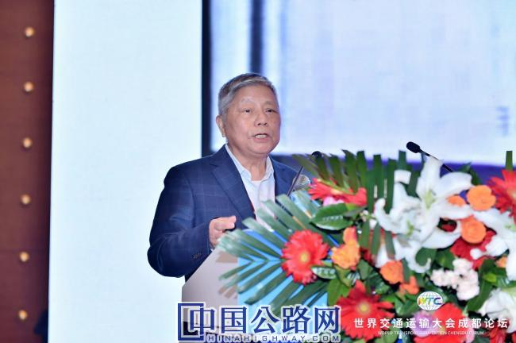
陈政清：技术创新需难点分散、多部门协作
创新能力才是强国的标志，而技术创新难在风险控制，需要通过难点分散有效管控风险，重大创新还需要多部门协作。
有几个案例值得我们思考。中国斜拉桥为何在1993年一举创造了602米跨度的世界纪录？因为从1970前后就开始准备，将斜拉桥建造的几项关键技术分别安排在上海和重庆的几座200米跨度的斜拉桥建设中，每座桥攻关一项新技术，将风险降低到可以承受的水平。其中，重庆石门长江大桥获得国家科技进步一等奖。近30年来，我国一直保持斜拉桥建造技术的领先地位。
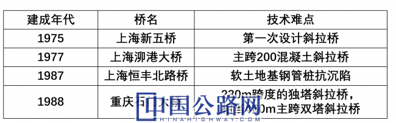
计划经济遗留的行业壁垒在逐渐打破，但仍然存在。2008年风灾，大量输电线路受损断电，电网系统加大与土木工程院校的合作，进行了一系列基础研究，修订了规范，抗灾能力显著提高。我国盾构机技术高速发展也是多个行业配合的结果，浙江大学液压技术、天津大学开发的力学分析软件都有很大贡献。可见，多部门协作有力地推动了重大创新。
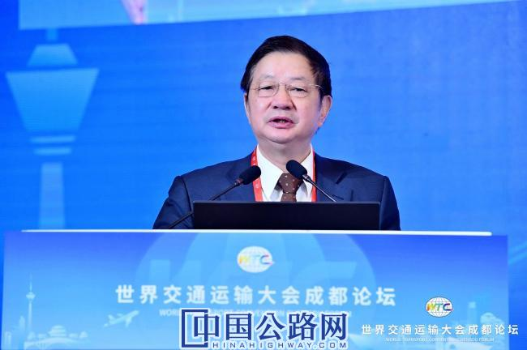
陈湘生：智慧出行愿景以“人”为本
未来智慧出行愿景可以概括为“一个核心、两个最优、三种机制、四个链条、五个圈层”，简称“12345”框架。
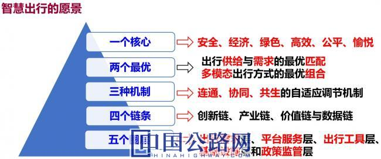
其中，“一个核心”是指以人的“安全、经济、绿色、高效、公平、愉悦”出行和生活为最终导向。“两个最优”是指出行整体供给与需求之间的最优匹配，以及不同城市内部公共交通、共享出行、私人出行的最优组合。“三种机制”是指未来出行生态系统具备连接、协同、共生的自适应调节机制，包括各组成部分之间的泛在连接、车辆一交通一能源一信息等各子系统之间的协同融合，以及各种出行模式的聚合共生。“四个链条”是指贯穿整个生态系统的基本链条，包括新技术和新模式不断成熟的创新链、呈现平台型经济形态的产业链、可产生巨大增值空间的价值链、代表未来出行“血液”的数据链。“五个圈层”是指构成未来出行生态系统的重要组成部分，包括出行需求层、平台服务层、出行工具层、基础设施层和政策监管层。
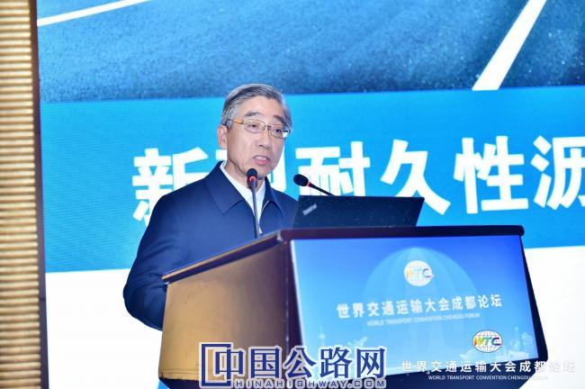
郑健龙：30年内将新建近10万公里高速
改革开放以来，我国公路建设取得了巨大成就，截至2019年底，高速公路通车总里程近15万公里，其中95%以上为沥青路面，沥青路面为我国公路交通发展作出了重要贡献。
未来30年，我国还将新建近10万公路高速公路。沥青路面应该加强避免在设计理论与方法上，出现结构体系、力学模型、强度理论与结构抗力模型、路基参数等不合理问题，以成倍提升沥青路面使用寿命为目标，系统建立新型耐久性沥青路面设计理论与方法。
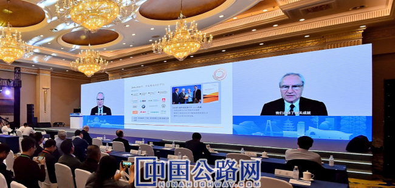
孔翰宁：2030年可减少30%碳排放。
目前，整个交通系统面临两大挑战：一是减少碳排放，发展自动驾驶、电动汽车、氢能源汽车；二是数字化，包括但不限于人工智能、高级机器人、自动驾驶的应用，由数字平台驱动，在冲击下将产生新的商业模式。减排与数字化都具备颠覆未来交通出行方式的潜力。
但是，由于技术成本较高、耗时较长，新的商业模式和竞争对手已进入市场，行业更新速度极快。因此亟需建立整体路径，以减少二氧化碳排放、可持续化系统转型（多产业联合）、确保竞争力和就业、避免社会矛盾升级等。根据改革方案和健全的标准指导，预计到2030年可减少30%的碳排放。
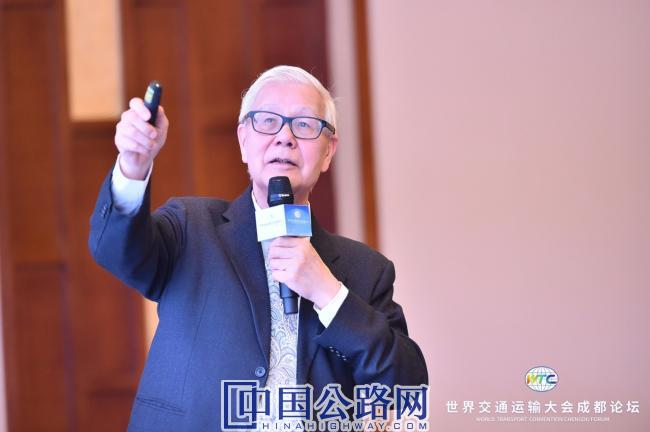
邓文中：悬索桥、斜拉桥、拱桥局可实现2000米跨度
在人类几千年的历史里，桥梁的建设主要分为梁桥、拱桥、悬索桥、斜拉桥。建造一座安全的、2000米跨度的大桥，最关键的是从安全角度出发，论证桥梁结构是否可行。悬索桥、斜拉桥、拱桥可能实现的最大跨度分别是10000米、5500米、3500米。但是，“可能”不一定“合理”，这只是一种理想的估算。从结构设计角度看，悬索桥、斜拉桥、拱桥三类桥梁均可以达到2000米跨度。
建造一座安全的、两千米跨度大桥还可以采取组合桥梁结构的尝试，比如，悬索桥与斜拉桥的组合或悬索桥与斜拉桥的组合等。
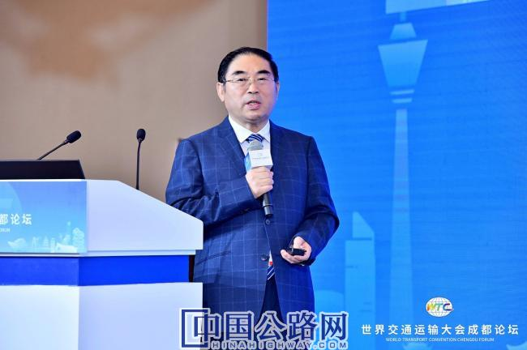
杜彦良：川藏铁路建设的“四个挑战”
随着我国中、西部建设发展的特殊需求，隧道建设重心将向地形、地质极端复杂的高原峡谷地区转移。
以川藏铁路为例，工程面临的技术挑战主要有四方面：一是地质条件艰险，板块活动强烈、断裂带密集、构造应力，以及大变形、岩爆、突水涌泥不良地质体聚集。二是地理环境多变，有高寒、高温、干旱、高湿、强风。三是山地灾害频发，巨型滑坡、泥石流等孕育灾害的环境隐蔽，致灾机理极为复杂和特殊。四是工程结构复杂，多条铁路线路位居世界第一，桥隧比超过80%，大埋深、高海拔隧道群和强风口、大跨越江桥梁多。
【编辑：耿茁 QQ:360638367；Tel:010-84990712】
【审核：孙婧】
 微信公众号
微信公众号
 微信订阅号
微信订阅号